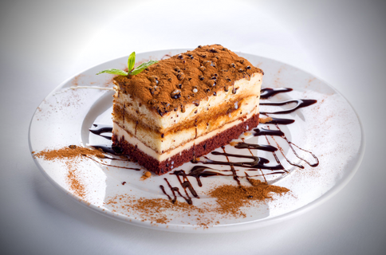

About Ronnie's Cafe
Ronnie’s Café is a unique cafe that serves delicious comfort food at affordable prices. We are located at Singapore Polytechnic. We are one of those cafes that roast their own coffees. We roast the coffee in small batches, regularly in order to maintain the flavour and to meet the demand of the cafe and customers. Our coffee are roasted by under our specially trained staff.
Our 60-seater cafe delivers the evergreen favourites classics like English Breakfast, Homemade Pancakes as well as weekend specials dishes like our Kaya Yogurt. You can always enjoy a slow and enchanted morning with friends or colleagues over gourmet coffees and luxurious teas.